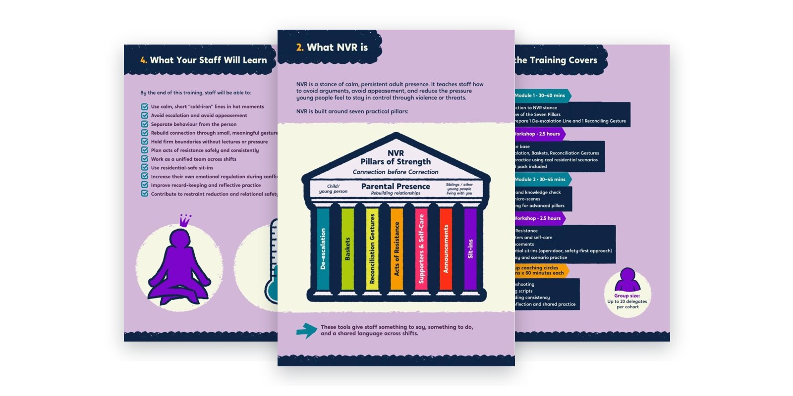
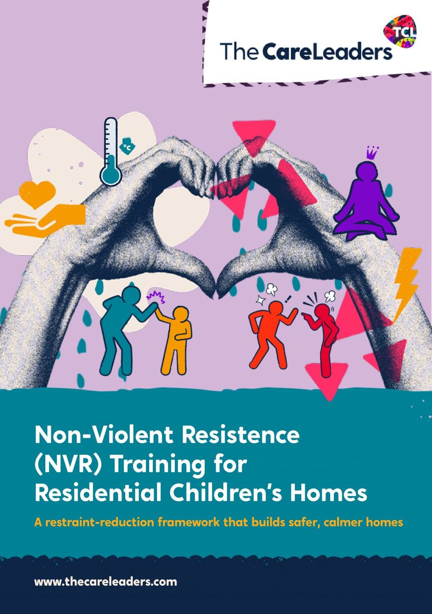
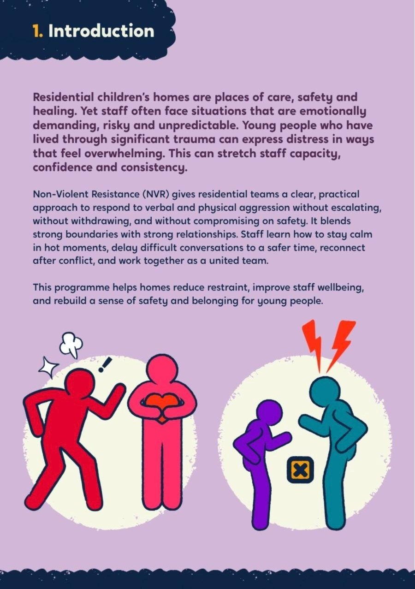
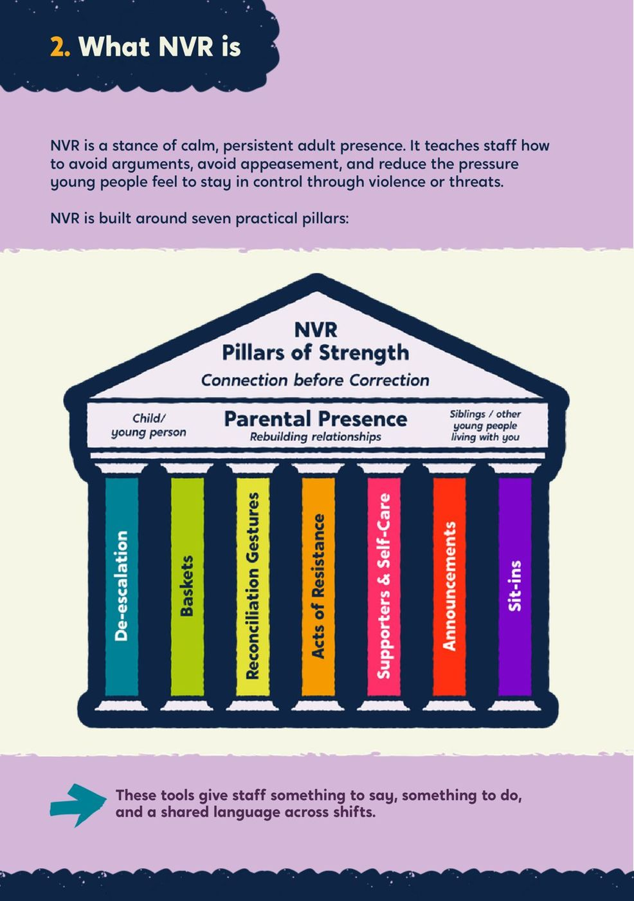
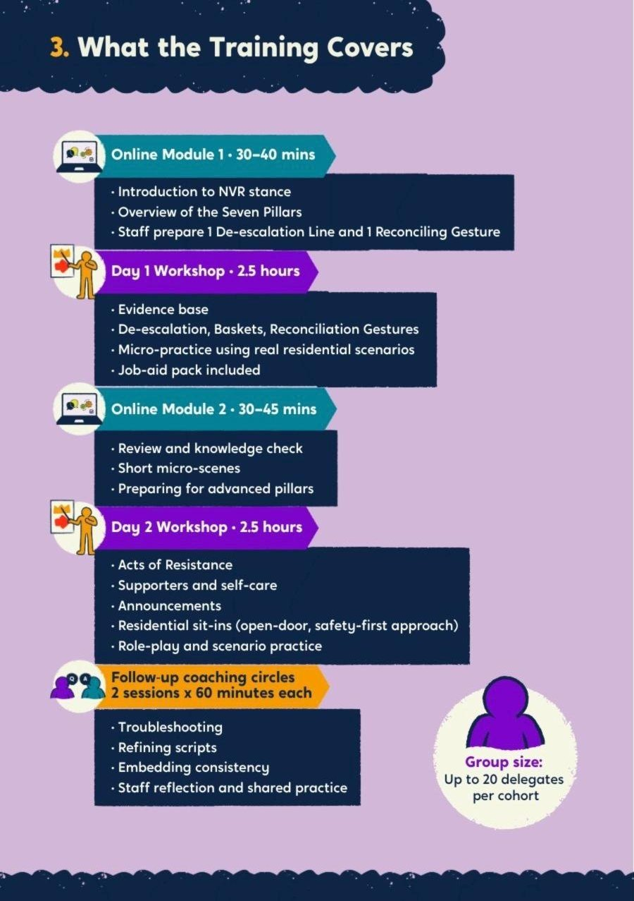
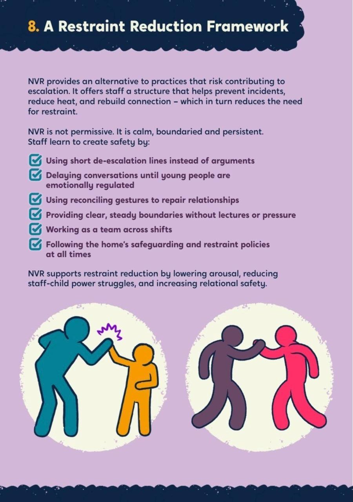
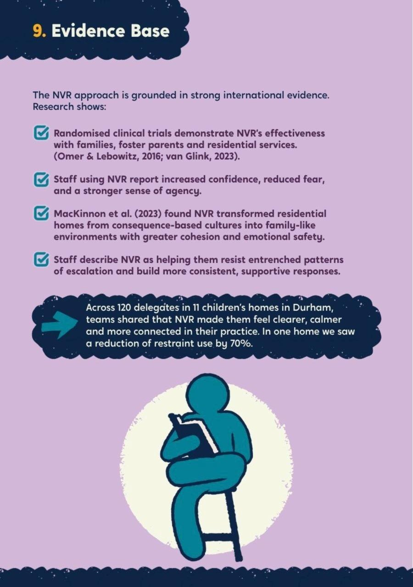
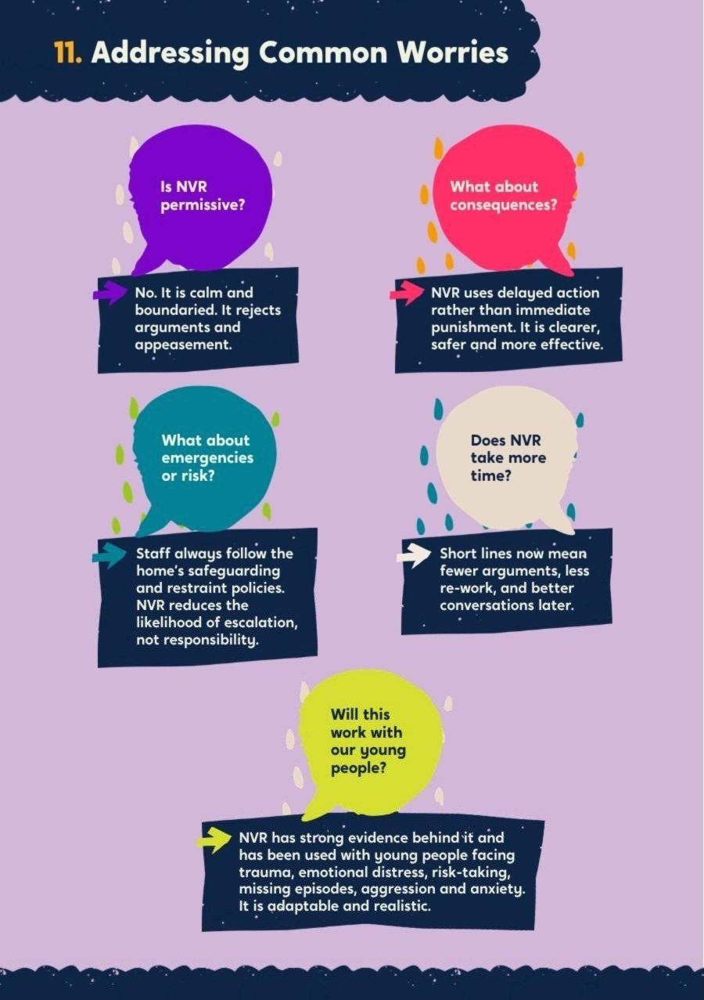

Durham County Council: non-violent resistance in 11 children’s homes
Durham Cares set a clear goal: less restraint and stronger relationships. Durham asked us to give every residential worker another way to respond when a young person’s behaviour escalates.



The starting point
Durham Cares committed the council to reducing physical restraint by 30% within two years. That meant giving staff something to do instead: a way to stay calm and present when a young person’s behaviour escalates, and to repair the relationship afterwards.
What we did
- Step 1OnlineTwo modules on The Care Leaders Online: NVR principles, the Seven Pillars and preparation for the workshops
- Step 2Workshop 1De-escalation and reconciliation gestures, run morning and afternoon so homes kept safe staffing
- Step 3Workshop 2Acts of resistance and sit-ins
- Reach120 staff, 11 homesFrom launch in September 2025 to the close of the programme
We designed the programme around the realities of residential care. Every member of staff completed two online modules on The Care Leaders Online, covering NVR principles, the Seven Pillars and preparation for the face-to-face sessions. They then attended two half-day workshops on de-escalation, reconciliation gestures, acts of resistance and sit-ins. We ran each workshop in the morning and again in the afternoon, so homes could keep safe staffing levels. The programme launched in September 2025, and by its close had reached 120 staff across 11 homes.
How we worked
Story
Lived experience of residential care opened every session.
Theory
Non-violent resistance and the evidence behind it.
Tools
De-escalation, reconciliation gestures and support from colleagues, taken back to the home that night.
What changed
Staff across the programme have consistently reported feeling clearer, calmer and more connected in their practice.
What Durham runs now
Every member of staff keeps access to the two online modules on The Care Leaders Online, and the approach now sits inside Durham Cares, the vision the council owns.

See the work
What we made, and what it looked like.
The programme
NVR training designed for 11 children’s homes and their rotas.
120 staff trained
Residential staff trained in cohorts, with work between sessions.
The brochure
What NVR is, what the training covers, the restraint reduction framework and the evidence base.
Session materials
Slides and workbooks for every session, handed over to Durham.






